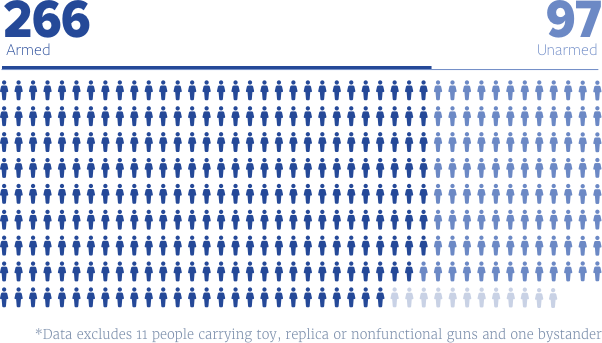
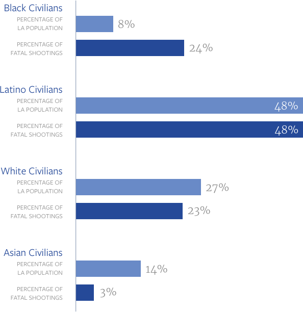

Unarmed and dangerous?
The call from dispatch was routine: shots fired on Eucalyptus, an 18th Street Gang hangout in the city of Bellflower.
Los Angeles County Sheriff's deputies rolled up to find a scene that was just as ordinary: two men drinking beer in the parking lot of an apartment building. It was about 9:30 p.m. on a summer night, June 16, 2010.
The deputies told the men to put their hands on the hood of the patrol car. One complied. The other put his beer down instead and reached behind him.
Deputy Daniel Mailloux thought the man had a gun, according to official accounts, and shot Dexter Luckett in the chest, killing him.

“The only thing he probably reached for is to pull up his pants, because they were probably falling down,” said Anthony Jefferson, Luckett’s best friend, who was not there. Luckett weighed 140 pounds and stood nearly 6 feet tall.
Luckett, 23, was partying with a friend after getting accepted to trade school.
He also was unarmed.
An investigation by KPCC found one in four people shot by law enforcement officers in Los Angeles County — like Luckett — do not have a weapon: not a gun, not a knife, not even a stick.
Armed vs. Unarmed
According to records of 359 shootings provided by the district attorney, one in four people shot by officers were unarmed.
Police agencies do not typically release those kinds of statistics. They emerge from KPCC’s analysis of district attorney summaries of 359 officer-involved shootings in L.A. County between 2010 and 2014 — the most recent records available — as well as other public records and interviews.
The new data adds context to an intense debate around police shootings of unarmed people that has boiled over in the past year and a half — a debate that has focused mostly on individual shootings in Southern California and across the country.
Based on the KPCC review, officers in Los Angeles County collectively shoot unarmed people at too high a rate, said William Terrill, a Michigan State University criminologist who studies police use of force policies and practices.
You have to do what you have to do to protect your own life and the lives of others.
While there’s no standard, Terrill said, NYPD records show officers there shot unarmed suspects less than 20 percent of the time during the same period. Terrill thinks even that is too many.
“My gut tells me 20 percent is too high,” he said. “My gut tells me one in 10 is too high.”
Los Angeles County Sheriff’s deputies have an even higher ratio, KPCC found: one in three people shot by deputies was unarmed.
Sheriff Jim McDonnell said that would be “troubling to anybody,” but maintains the shootings were unavoidable.
“You have to do what you have to do to be able to protect your own life and the lives of others,” McDonnell said.
Legal precedent supports McDonnell’s view. Officers are justified in shooting if they feel they — or other officers or members of the public — are in danger.
Looking Carefully At Unarmed Shootings
KPCC’s analysis finds many instances fit McDonnell’s scenario. Officers in Los Angeles shot 266 armed suspects. In another 12 shootings of unarmed people, police said the individuals reached for officers’ guns or holsters.
The D.A. did not release records on at least 29 shootings for the 2010-14 period. They are still pending.
But officers shot at least 67 instances because they believed — mistakenly — that they were armed. Among them:
-
Rigoberto Arcero
Los Angeles Sheriff’s Deputy Luis Mendoza fatally shot Rigoberto Arceo as he moved toward Mendoza with what the deputy described as clenched fists. Arceo was unarmed.
-
Eduardo Armas
Deputies Jeremy Draper, Michael Espinosa and Vincent Ortiz shot Eduardo Armas, mistaking his wheelchair for a weapon during a reckless driving stop.
-
Andres Avila
Pomona Police Officer Edgard Padilla fatally shot Andres Avila believing Avila was arming himself after being roused from sleeping in his car. The shiny object Avila grabbed turned out to be a silver container of cocaine.
-
Brian Beaird
LAPD Officers Armando Corral, Leonardo Ortiz and Michael Ayala fatally shot Brian Beaird, a veteran, when they saw him reaching towards his waistband while fleeing his Corvette after a high-speed chase that started in Cudahy. He, too, was unarmed.
In reviewing the circumstances surrounding Dexter Luckett’s death, prosecutors found Mailloux was within his rights to shoot and declined to file charges.
In fact, the Los Angeles County district attorney’s office said it hasn’t brought criminal charges against an officer for shooting a civilian on duty in 15 years.

“Police officers are allowed to use deadly force,” said Deputy District Attorney James Garrison, who heads the division that reviews police shootings. “We make the decision based on the law.”
His boss, District Attorney Jackie Lacey, agrees.
“We understand the public's anger over what they perceive to be unjustified shootings and killings,” she said. “But we are looking very, very carefully at these cases.
“We're pretty confident if you look at the reasons that we have and the law, that you will find that we made the right call in every case," she added.
Patterns In Police Shootings
Lacey’s office is the only public agency that reviews everytime an officer in Los Angeles county shoots someone. But it does not identify or report on patterns that might address the big issues in the debate over officer-involved shootings — for one, the race of people who were shot.
KPCC gathered those details from Los Angeles County medical examiner records and found, between 2010 and 2014, law enforcement officers fatally shot black people at nearly triple the rate of white and Hispanic people, relative to population. The race of those who survived shootings is unknown.
Race And Officer-involved Shootings
Over the past five years, a KPCC review of medical examiner records found law enforcement officers in Los Angeles County fatally shot black people at nearly triple the rate of white and Hispanic people.
KPCC’s analysis found that in nearly half the cases where officers shot unarmed people, they mistakenly thought individuals were arming themselves because they dropped their hands out of sight or “reached for” a waistband or their pants.
That’s how Michael Nida died.